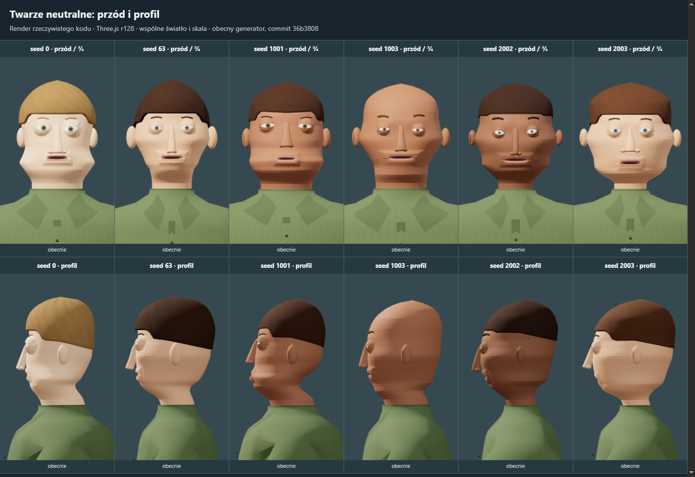

Genomes / studium wyglądu
Proste modele. Naturalniejsza piechota.
Porównanie rzeczywistych renderów generatora: baza przed poprawkami oraz kadry po wdrożeniu 0.14.0. Te same wybrane seedy, ujęcia i światło ułatwiają ocenę twarzy, ekspresji, szyi i sylwetki.
24 września 2026
Audyt: 36b3808 · po zmianach: 0.14.0
Twarze neutralne: przód i profil
Poziome uskoki bryły wokół żuchwy i policzków są widoczne także w profilu. Korekta bazowego kształtu i osadzenia oczu ma większy priorytet niż drobne detale.
- Górny rząd
- Widok z przodu, ekspresja NEUTRAL.
- Dolny rząd
- Te same twarze z profilu.
- Kolumny
- Seedy od lewej: 0, 63, 1001, 1003, 2002, 2003.

Nie udało się otworzyć obrazu. Zachowaj katalog images obok tego pliku HTML.